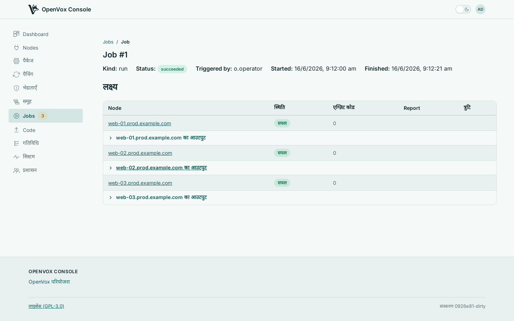

उपयोग
Jobs चलाएँ
माँग पर Puppet या कोई Puppet Task चलाइए — एक Node पर, किसी चयन पर, किसी क्वेरी से मेल खाने वाले Nodes पर, या किसी Node समूह पर — और देखिए कि हर Node ने क्या किया।
कंसोल Nodes पर उनके अगले निर्धारित रन के बजाय अभी Puppet चला सकता है, और आपके deploy किए गए कोड के Puppet Tasks चला सकता है। हर अनुरोध एक Job है, जो उसके हर लक्षित Node और हर एक पर हुई घटना के साथ दर्ज होता है।
Job शुरू करने के लिए orchestrator:run चाहिए; Jobs देखने के लिए orchestrator:read। किसी Node तक पहुँचने के लिए उसका कनेक्टेड होना ज़रूरी है: देखें Nodes जोड़ें।
यदि आपकी भूमिका विशेष Node समूहों पर दी गई है, तो आप केवल उन्हीं समूहों के Nodes पर Jobs शुरू कर सकते हैं, और आपको केवल उन्हीं के Jobs दिखते हैं। उनके बाहर के किसी Node का नाम देने वाला Job पूरा का पूरा अस्वीकार हो जाता है - बाक़ी Nodes पर भी कुछ नहीं चलता - और कंसोल बताता है कि किन Nodes को हटाना है। देखें उपयोगकर्ता, भूमिकाएँ और टोकन।
कई रन और Tasks क्रम से पूरे करने के लिए देखें Plans चलाएँ। किसी Job को बाद में, या बार-बार, शुरू करने के लिए देखें Jobs शेड्यूल करें।
Puppet चलाएँ
जहाँ भी आप अपने मनचाहे Nodes देख रहे हों, वहीं से:
- एक Node: Node के पृष्ठ पर Puppet चलाइए।
- एक चयन: Nodes पृष्ठ पर Nodes चुनिए, फिर चयन पर Puppet चलाइए।
- किसी समूह से मेल खाने वाला हर Node: समूह के पृष्ठ पर, उसके मिलते Nodes पर Puppet चलाइए।
हर एक Nodes के नाम बताने वाला एक dialog खोलता है। Job शुरू करने के लिए उसकी पुष्टि कीजिए, और आपको उस Job पर ले जाया जाता है।
या Jobs पृष्ठ से शुरू कीजिए, जहाँ Puppet चलाएँ और Task चलाएँ आपको बताने देते हैं कि कौन-से Nodes: देखें Nodes चुनें।
रन विकल्प
dialog तीन विकल्प देता है। कोई न चुनने पर रन सामान्य होता है।
- No-op बताता है कि रन क्या बदलेगा, और कुछ नहीं बदलता। Job हर Node के लिए वह सूची दिखाता है।
- डीबग आउटपुट Job के हर Node के लिए Puppet का debug लॉग दर्ज करता है।
- Environment Node से उस Environment के विरुद्ध चलने को कहता है, ताकि किसी Node को किसी शाखा पर आज़माया जा सके।
Environment एक अनुरोध है, ओवरराइड नहीं। जब किसी Node के Node समूह कोई Environment सेट करते हैं, तो रन चाहे जो माँगे, Puppet उसी का उपयोग करता है। Node की Report आने पर Job हर उस Node को चिह्नित करता है जो माँगे गए Environment से अलग Environment में चला।
विकल्पों वाला रन वह दर्ज करता है जो Puppet ने छापा। इसे पढ़ने के लिए Job पर किसी Node की पंक्ति के नीचे आउटपुट खोलिए। लंबा आउटपुट 256 KB पर काट दिया जाता है, और यह बताया जाता है।
रन विकल्पों के लिए कंसोल के इस या बाद के संस्करण का node agent client चाहिए। पुराना client अनुरोध अस्वीकार कर देता है, और Node की पंक्ति यह बताते हुए विफल होती है कि client बहुत पुराना है। उस Node पर Puppet बिल्कुल नहीं चलता, इसलिए no-op अनुरोध कभी असली रन के रूप में नहीं चलता। client अपग्रेड कीजिए - देखें Node एजेंटों को नवीनतम रखें - और फिर चलाइए। बिना विकल्पों वाला रन हर client संस्करण पर काम करता है।
API के ज़रिये, access token के साथ:
curl -X POST https://console.example.com/api/v1/orchestrator/runs \
-H "Authorization: Bearer <access token>" \
-H 'Content-Type: application/json' \
-d '{"targets":["web01.example.com","web02.example.com"]}'
विकल्पों वाले रन के लिए options जोड़िए। तीनों में से कोई भी छोड़ा जा सकता है:
-d '{"targets":["web01.example.com"],
"options":{"noop":true,"environment":"feature_x","debug":true}}'
यदि Environment का नाम मान्य नहीं है, यदि openvoxserver में ऐसा कोई Environment नहीं है, या यदि अनुरोध में ऐसा विकल्प है जिसे कंसोल नहीं जानता, तो अनुरोध अस्वीकार होता है और कोई Job नहीं बनता।
Nodes चुनें
Jobs पृष्ठ पर Puppet चलाएँ और Task चलाएँ पूछते हैं कि किन Nodes पर चलाना है, तीन में से किसी एक तरीक़े से:
-
Nodes की सूची: certnames, हर पंक्ति में एक।
-
क्वेरी: एक PQL क्वेरी जो
certnameलौटाती है। Job शुरू होने पर कंसोल इसे openvoxdb पर चलाता है, और Job उन्हीं Nodes पर चलता है जो यह लौटाती है:inventory[certname] { facts.os.family = "Debian" and facts.os.release.major = "12" } -
Node समूह: Job शुरू होते समय समूह में मौजूद Nodes।
Nodes का पूर्वावलोकन दिखाता है कि इस समय आपके चुनाव का अर्थ कौन-से Nodes हैं। dialog कुछ भी शुरू करने से पहले उन्हें हमेशा आपको दिखाता है: पहली बार चलाएँ चुनने पर पूर्वावलोकन चलता है, और दूसरी बार Job शुरू होता है। जो क्वेरी या समूह किसी Node से मेल नहीं खाता, वह कुछ शुरू नहीं करता।
क्वेरी PQL के अपने syntax में होनी चाहिए और certname लौटानी चाहिए। जिस क्वेरी का कंसोल या openvoxdb उपयोग नहीं कर सकता, वह कारण सहित अस्वीकार होती है; syntax त्रुटि के मामले में यह openvoxdb का अपना संदेश होता है जो गलती की ओर इशारा करता है।
यदि आपकी भूमिका विशेष Node समूहों पर दी गई है, तो क्वेरी या समूह आपको वे मेल खाने वाले Nodes देता है जो आपके समूहों में हैं, और दूसरों के बारे में कुछ नहीं बताता। आपकी क्वेरी में subquery भी नहीं हो सकती - एक entity के braces दूसरी के भीतर - क्योंकि ऐसी क्वेरी से उन Nodes के बारे में पता लगाया जा सकता है जिन्हें आप नहीं देख सकते। ऊपर के उदाहरण की तरह एक ही entity पर क्वेरी कीजिए; inventory किसी Node के हर Fact और trusted fact तक पहुँचता है। सूची में आपके द्वारा नामित Nodes अब भी या तो सब या कोई नहीं होते हैं।
API के ज़रिये, targets की जगह query या group (किसी Node समूह की ID) दीजिए:
curl -X POST https://console.example.com/api/v1/orchestrator/runs \
-H "Authorization: Bearer <access token>" \
-H 'Content-Type: application/json' \
-d '{"query":"inventory[certname] { facts.os.family = \"Debian\" }",
"options":{"noop":true}}'
POST /api/v1/orchestrator/targets/resolve वही targets, query या group लेता है और कुछ भी शुरू किए बिना Nodes के साथ उत्तर देता है।
एक Task चलाएँ
Task किसी module की tasks डायरेक्टरी में भेजी गई एक स्क्रिप्ट है, जिसके साथ उसके पैरामीटरों का वर्णन करने वाली metadata फ़ाइल होती है। कंसोल आपके deploy किए गए कोड के Tasks चलाता है - देखें कोड deploy करें - इसलिए किसी Task के लिए उसे रखने वाले module को deploy करने के अलावा कुछ इंस्टॉल नहीं करना पड़ता।
Tasks उन्हीं जगहों पर उपलब्ध हैं जहाँ Puppet रन: Node के पृष्ठ पर, Nodes पृष्ठ के चयन पर, किसी समूह के मिलते Nodes पर, और Jobs पृष्ठ पर Task चलाएँ। dialog में:
- वह Environment चुनिए जिससे Task लेना है। Tasks उस Environment के कोड से पढ़े जाते हैं, जैसा वह अभी deploy है।
- Task चुनिए। इसके नीचे उसका विवरण, और हर पैरामीटर के लिए एक फ़ील्ड दिखता है।
*चिह्नित फ़ील्ड आवश्यक है; खाली छोड़े गए फ़ील्ड को उसके metadata में घोषित default मिलता है। - वैकल्पिक रूप से, एक टाइमआउट सेट कीजिए। उसके समाप्त होने पर भी चल रहा Task, उसके द्वारा शुरू की गई हर चीज़ के साथ, रोक दिया जाता है और समय समाप्त होने के रूप में बताया जाता है। जब तक आप कुछ और न कहें, यह 30 मिनट है, और अधिकतम 55।
- Task चलाएँ Job शुरू करता है और आपको उस पर ले जाता है।
कुछ भी शुरू करने से पहले कंसोल पैरामीटरों को Task के metadata से जाँचता है, और जिस फ़ील्ड को वह अस्वीकार करता है उस पर कारण चिह्नित करता है। जब तक वे सही न हों, कोई Job नहीं बनता।
भूमिका को कुछ Tasks तक सीमित किया जा सकता है, और तब Task सूची केवल वही दिखाती है जिन्हें आप चला सकते हैं। जिस Task को आप नहीं चला सकते, वह 403 और उसके नाम के साथ अस्वीकार होता है, चाहे आप उसे सूची से चुनें या API से माँगें - देखें किसी भूमिका को कुछ Tasks तक सीमित करें।
जिस पैरामीटर को Task का metadata sensitive चिह्नित करता है - कोई पासवर्ड, कोई टोकन - वह एक छिपे हुए फ़ील्ड में टाइप किया जाता है। उसका मान Nodes को भेजा जाता है और कहीं नहीं: Job के संग्रहीत पैरामीटर, उसका पृष्ठ, गतिविधि लॉग और ऑडिट लॉग, सभी इसके बजाय Sensitive [value redacted] दिखाते हैं।
API के ज़रिये, Task, उसके पैरामीटर और, वैकल्पिक रूप से, Environment और सेकंड में timeout बताते हुए:
curl -X POST https://console.example.com/api/v1/orchestrator/tasks \
-H "Authorization: Bearer <access token>" \
-H 'Content-Type: application/json' \
-d '{"targets":["web01.example.com"],
"task":"service",
"params":{"action":"restart","name":"nginx"},
"environment":"production",
"timeoutSeconds":600}'
API भी इसी तरह जाँच करता है: अज्ञात Task, अनुपस्थित या अप्रत्याशित पैरामीटर, या गलत type का मान 400 के साथ अस्वीकार होता है, और उसके fields हर समस्या का नाम बताते हैं। dialog के पीछे का Task catalogue भी API में है: GET /api/v1/tasks/environments, GET /api/v1/tasks?environment=production, और GET /api/v1/tasks/<module>/<task>?environment=production (किसी module का अपना Task <module>/init है)।
Node क्या करता है
Node का एजेंट Task की फ़ाइलें, अपने प्रमाणपत्र के साथ, उसी Puppet सर्वर से डाउनलोड करता है जिसका उपयोग उसका अपना Puppet agent करता है, और जब तक हर फ़ाइल कंसोल द्वारा खोजे गए checksum से मेल न खाए, कुछ नहीं चलाता। यह सत्यापित फ़ाइलें रखता है, इसलिए वही Task फिर से चलाने पर कुछ डाउनलोड नहीं होता।
Task की स्क्रिप्ट सीधे चलाई जाती है, इसलिए उसकी पहली पंक्ति तय करती है कि उसे क्या चलाएगा (#!/bin/sh, #!/usr/bin/env python3)। Ruby Tasks Puppet agent के साथ आने वाले Ruby से चलते हैं, और Windows पर PowerShell Tasks PowerShell में चलते हैं। जहाँ कोई Task कई implementations देता है, वहाँ Node अपने लिए उपयुक्त implementation चुनता है।
Node अपने Puppet सर्वर का पता अपने Puppet कॉन्फ़िगरेशन से पूछकर लगाता है। जो Node इसके बजाय DNS SRV records से उसका पता लगाता है, उसके पास वहाँ पढ़ने के लिए कोई पता नहीं होता; उसके agent के environment में NODE_AGENT_PUPPET_SERVER=puppet.example.com:8140 सेट कीजिए।
Nodes को Task समर्थन वाले कंसोल का एजेंट चाहिए। जिस Node का एजेंट पुराना है, वह हर Task में Error: Unknown subcommand 'task' के साथ विफल होता है: उसे अपग्रेड करने के लिए Node की इंस्टॉल स्क्रिप्ट फिर से चलाइए - देखें Nodes जोड़ें।
किसी Job पर नज़र रखें
Jobs पृष्ठ हर Job को, सबसे नए से शुरू करके, सूचीबद्ध करता है। किसी Job का पृष्ठ हर लक्ष्य को उसकी अपनी पंक्ति में दिखाता है - उसकी स्थिति, निकास कोड और आउटपुट - इसलिए जो Job नौ Nodes पर चला और एक पर विफल हुआ, वह ठीक यही बताता है।


यदि कोई Job आपके Node समूहों के बाहर के Nodes पर भी चला, तो उसका पृष्ठ केवल आपके Nodes दिखाता है और यह बता देता है। Job की कुल स्थिति फिर भी उन सभी Nodes को समेटती है जिन पर वह चला, इसलिए वह विफल दिखा सकती है, भले ही आपको दिखने वाले सभी Nodes सफल रहे हों।
Task के लिए, हर लक्ष्य की पंक्ति खुलकर Task का परिणाम दिखाती है: उसके द्वारा छापा गया JSON, या _output के अंतर्गत उसका पाठ। Task तब विफल होता है जब वह 0 के अलावा किसी कोड से बाहर निकले, या कोई _error बताए, जिसका संदेश पंक्ति की त्रुटि के रूप में दिखाया जाता है।
जो Node Job शुरू होते समय कनेक्ट नहीं था, वह Job को खुला रखने के बजाय तुरंत "agent not connected" के साथ विफल हो जाता है।
रन पूरा होने पर उसकी पंक्ति उस रन से बनी Report से जुड़ जाती है, जिसमें उसके द्वारा बदला गया हर संसाधन है।
Jobs सूची और किसी Job का पृष्ठ रन के विकल्प दिखाते हैं: No-op, उसके द्वारा माँगा गया Environment, और डीबग।
जब Job के Nodes सूची से नहीं आए, तो ये यह भी दिखाते हैं कि वे कहाँ से आए: क्वेरी या Node समूह। शेड्यूल द्वारा शुरू किया गया Job शेड्यूल का नाम बताता है, और शेड्यूल के स्वामी द्वारा चलाए गए के रूप में दर्ज होता है। यदि क्वेरी से शुरू हुआ Job आपके Node समूहों के बाहर के Nodes पर भी चला, तो आपको आपके Nodes दिखाए जाते हैं पर क्वेरी नहीं।
हर Job की शुरुआत और परिणाम भी गतिविधि पृष्ठ पर दर्ज होते हैं।
Plan सूची में एक पंक्ति है। उसका पृष्ठ उसके चरण क्रम से दिखाता है, हर एक की अपनी अवस्था और Node परिणामों के साथ।
ऐसा Job जिसका इंस्टेंस रुक गया
किसी Job पर अंत तक वही कंसोल इंस्टेंस नज़र रखता है जिसने उसे शुरू किया। यदि वह इंस्टेंस लक्ष्यों के पूरा होने से पहले रुक जाए, तो Job हमेशा के लिए चालू दिखता रहता; इसके बजाय, जब वह किसी भी रन में लग सकने वाले समय से कहीं अधिक देर तक चल चुका होता है, तो उसे विफल चिह्नित कर दिया जाता है।